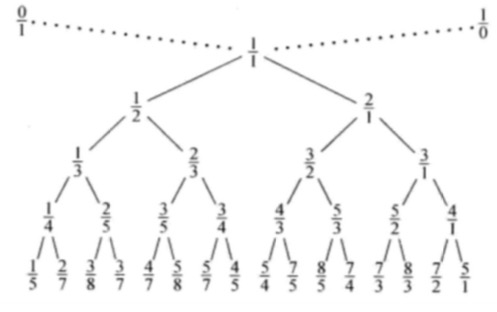

听斯给普讲的有趣的数论问题，感觉海星？
顺便加上了一点自己之前随便整理的东西。
瞎整理系列
gcd 的实现
一个必要的式子
$a\geq b\to (a,b)=(b,a \bmod ~b)$
令$a=bp+q~(0\leq 1<b)$ 。若 $\exists d|a,d|b$，则有 $da’=db’p+q$，移项得 $q=d(a’-b’p)$，故$d|q\Longrightarrow d|(a\bmod~b)$。
考虑最后，$b’=0$，此时有$a’=q$，又因为 $\forall d$ 满足 $d|a,d|b$, $\exists d|q\to d|a’$，即此时$a’$是所有因子的倍数，故 $a’$ 为最大公因数。
复杂度证明
考虑分类讨论，不妨令 $a>b$.
- 当 $\frac{a}{2}>b$ 时，有 $a\bmod b<b<\frac{a}{2}$
- 当 $\frac{a}{2}\leq b$ 时，有 $a\bmod ~b=a-b<\frac{a}{2}$
所以复杂度是 $\log(\max(a,b))$ 的。
exgcd 的实现
考虑丢番图方程 $ax+by=(a,b)$ 。
发现迭代到 $x=1,y=0$ 时，上式依旧成立。
同时，有 $bx+y\cdot (a\bmod ~b)=(a,b)$ ，化简：
按照这种形式向上递归后，就会少一层$\bmod$ 然后就没有然后了。
阶
使得
的最小的 $x$ 称为 $a$ 关于 $p$ 的阶。
那么有结论 $x|\varphi(p)$ 。
考虑反证法。因为
且 $x$ 最小，又因为假设 $x$ 不是 $\varphi(p)$ 的约数，故 $x<\varphi(p)$ 。
那么会有不妨令 $\varphi(p)\equiv kx+q(0\leq q<x)$ ，则有
但这显然不合理，因为 $x>q$ 但根据定义 $x$ 应该是最小的满足 $a^o\equiv 1(\bmod p)$ 的数，QED。
威尔逊定理
对于素数 $p$，有
证明大概就是考虑，在$2,3,…,n-3,n-2$中，每个数有且仅有一个逆元，不会 $\geq p$ 且唯一，所以会互相抵消。
exgcd的应用
类欧几里得问题
发现其实本质上求的是一条直线在 $x$ 正半轴和 $y$ 的正半轴的整点数量。那么考虑对于矩形区域可以随便求，对于三角形区域，可以让 $a$ 对 $c$ 取模之后依旧不影响结果，所以考虑沿着 $y=x$ 对称，那么会使得 $\frac{a}{c}$ 变成 $\frac{c}{a}$ ，这样就可以达到一个辗转相除的效果，复杂度 $\log n$ 。
杂题1
已知 $a_x=a_{x-1}+a_{x-2}$ ，给定 $a_1$, 求有多少个 $a_2\in[l,r]$ 使得 $a_k=b~(\bmod p)$. $k,p=O(10^9)$ 。
发现最后的 $a_k$ 一定可以写成 $ca_1+da_2=a_k=b(\mod p)$ ，然后就转化成一个瞎 $exgcd$ 问题了。
多项式复合
已知 $f(x), g(x)$，求 $f(g(x))\mod x^n$ ，$1\leq n,m\leq 4000$。
因为
于是考虑预处理 $g(x),g^2(x)\cdots g^p(x)$ ，和 $g^{2p}(x),g^{3p}(x)\cdots$ 这样，每块先对 $f_{i+kp}g(x)^i$ 求和再做多项式乘法。
最后复杂度就是 $O(nm+\sqrt mn\log n)$
Stern-brocot Tree
大概是把 $\frac{0}{1}$ 和 $\frac{1}{0}$ 当做两个虚根。然后每次在两个点 $\frac{n}{m}$ 和 $\frac{n’}{m’}$ 中间插入一个 $\frac{n’+n}{m’+m}$ 。之后大概是这样的：

bzoj 2852
给两个有理数 $a,b$，求最小的正整数 $k$, 使得 $(ak,bk)$ 里有整数。
$a$, $b$ 整数部分不超过 $2^{31}$ , 小数位数不超过 $300$ 位。
发现 $(a,b)$ 的答案和 $(a-1,b-1)$ 的答案一样。所以考虑将 $(ak,bk)$ 移动到 $[0,1)$ 这个区间。此时如果 $b\geq 1$ 或者 $a=0$ 那么就可以找 $0/1$ 。否则就变成了解这样一个不等式：
也就是
那么就是找一个分母最小的夹在 $a,b$ 之间的分数。并且由于 $b<1$ 所以一定是个真分数。那么就可以在stern-brocot Tree树上找LCA即可。
这个地方似乎是不用真的建出来树，因为存在某种神秘的树上二分方式，十分高妙。
卢卡斯定理
证明
今天重学了一遍，发现证明好简单？
对于 $p$ 是质数而言，根据费马小定理一定有
和
所以有
如果设 $n=sp+t,~0\leq t<p$ 。那么就有
考虑两边都暴力二项式展开
观察右边。发现因为后面那个括号里 $x$ 的次数 $<p$，前面一个括号内 $x$ 的次数一定是 $p$ 的倍数 。所以对于每个 $i$ ，都有唯一的 $j\cdot p+k=i$ （带余除法的唯一性）。所以可知
1 | namespace Lucas_T{ |
可以知道的是，Lucas定理还有另一种表示方式。如果把 $m,n$ 都看作 $p$ 进制数的话，即
那么有
其实不难理解，可以联想十进制数拆分出每一位的过程，也是 $\bmod 10$ 之后再除以 $10$ 。
例题：古代猪文
求 $g^\sum\textstyle_{d|n}\binom{n}{d}\bmod 999911659$ 。
发现 $999911658=2\times 3\times 4679\times 35617$ ，然后分别做 Lucas 再拿crt合并起来就好了。
1 |
|
例题：组合数问题
求 $0≤j≤i≤n$ 且 $j≤m$ 的数对 $(i,j)$ 里有多少满足 $\binom{i}{j}≡0 \pmod p$
$T ≤ 100,n,m ≤ 10^{18},p ≤ 100$ 且是一个质数.
根据上面那个性质，只要 $p$ 进制下 $i$ 的任何一位 $<j$ 就 $\equiv 0$ 。然后就直接数位dp就完了。
小 Q 的集合
求从 $n$ 元集合 $\rm S$ 中随机选择一个子集 $\rm T$ 。求 $|\mathrm{S−T}|^k −|\mathrm{T}|^k$ 的方差。
$n≤10^{10^6},k≤10$，答案对质数 $m≤10^6$ 取模。
嗯，学习了一下方差的定义。记这个东西的期望是 $E(x)$ ，那么方差就是 $E([x-E(x)]^2)=E(x^2)-E^2(x)$。
嗯，得出结论，概率论这一套是学不懂的。
说做法吧。根据期望的线性性，可以得到这个东西的期望是
那么显然这两项是对称的，所以这个东西的期望就是 $0$ 。所以就只需要求 $|\mathrm{S−T}|^k −|\mathrm{T}|^k$ 的平方的期望就可以了。那么答案也就是
emmm然而并不可以直接做。然后有个很神仙的点就是考虑拿Lucas定理来展开一层得到：
这么做是对的就在于每个 $\binom{n}{j}$ 都被分解成了唯一的 $\binom{\lfloor \frac{n}{m}\rfloor}{i}\cdot \binom{n\bmod m}{j}$ ，那么这两部分就可以分别算了。第一部分很显然就是 $2^n$ ，第二部分直接做就可以了。
嗯，这题真是十分高妙。
总结
数论有意思！
exLucas是不可能学的…